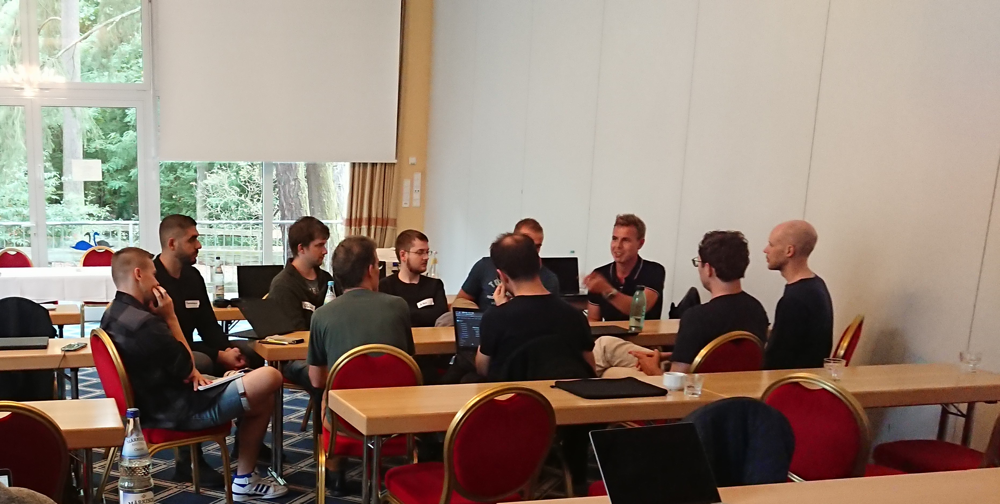
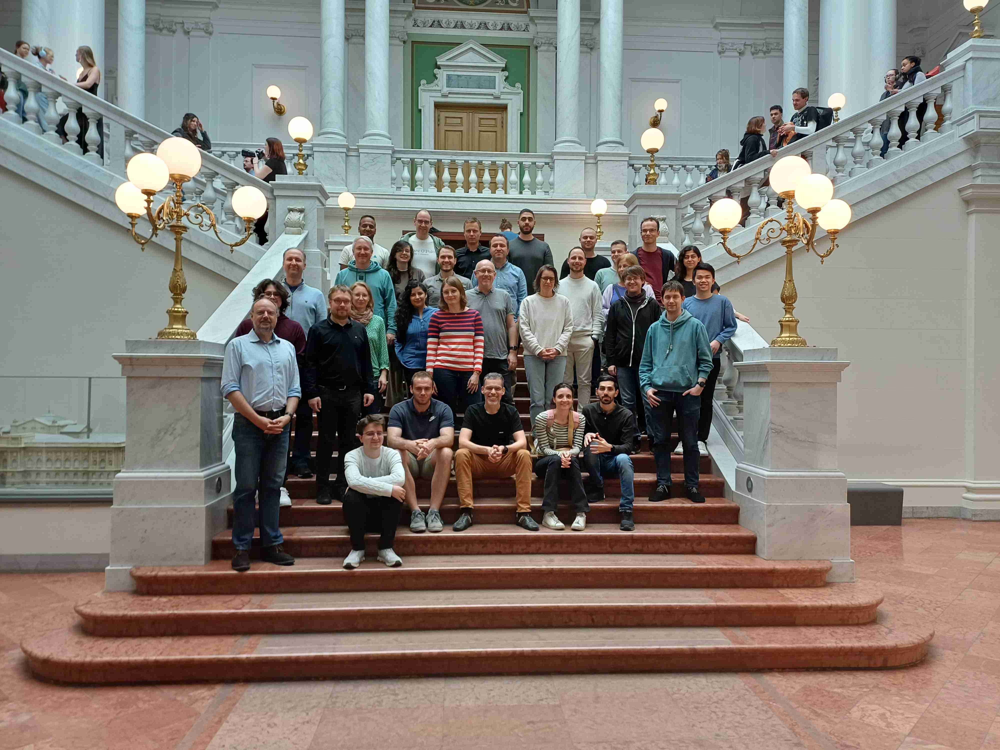
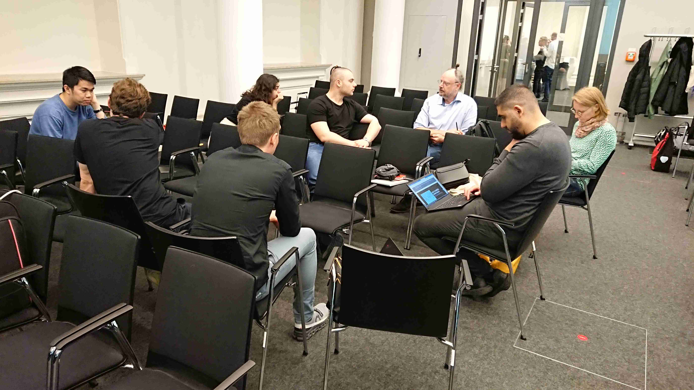
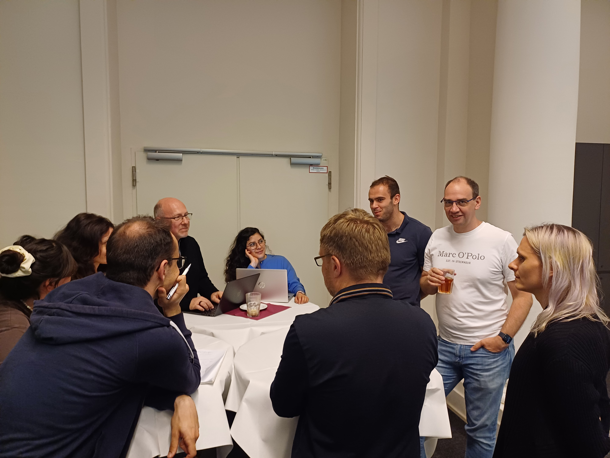
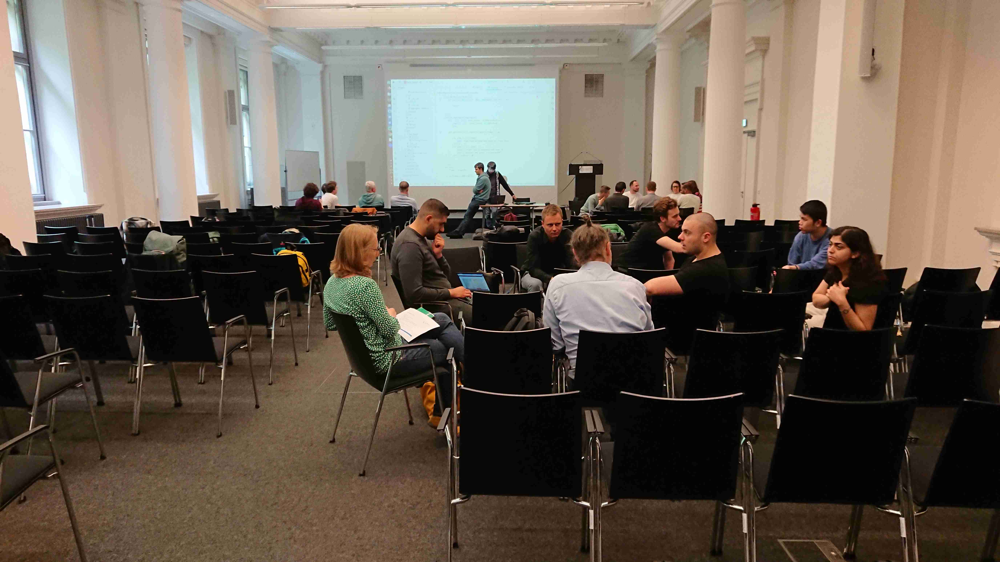
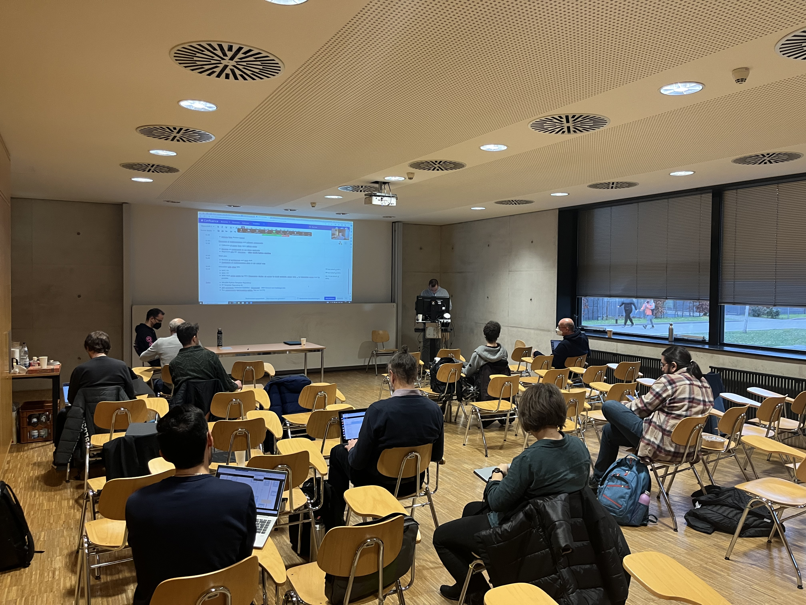
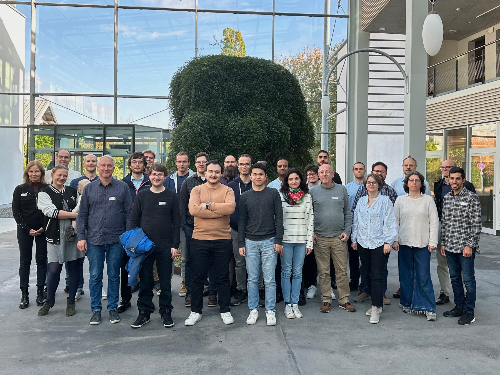

News
Here you will find an overview of the latest news in the context of PrivateAIM.
2024
25-27/09/2024: Retreat in Potsdam
Our three-day retreat in beautiful Potsdam has come to an end! Through inspiring presentations and lively discussions, we generated fresh ideas and strategies, setting key impulses for the next stages of the project. #PrivateAIM #Retreat #Teamwork



06-07/05/2024: Workshop in Leipzig
At our two-day #PrivateAIM workshop in the venerable Albertina Library of the @UniLeipzig, the Minimal Viable Product (MVP) of the FLAME platform was presented. In various breakout sessions, topics related to the FLAME architecture were then addressed in depth, various use cases and DIZ integration were discussed and next steps were defined. Many thanks to all participants for the interesting exchange! #PrivateAIM #Workshop #Leipzig #FLAME



2023
20/12/2023: Workshop in Frankfurt am Main
To close the year, a workshop to finalize the basic architecture of the FLAME platform took place yesterday at the University Hospital in Frankfurt.
16-18/10/2023: PrivateAIM Retreat in Lobbach
The first PrivateAIM Retreat took place in Lobbach from 16 to 18 October. This was the first face-to-face meeting of all project partners. In an atmosphere of lively dialogue and cooperation, we laid important foundations for the successful future of our project.
24/04/2023: Kick-Off-Meeting
The PrivateAIM virtual kick-off meeting took place on 24 April 2023. All team members came together to initiate and plan the first phase of the project.
01/04/2023: Official start
The PrivateAIM project officially started on 01.04.2023. We will report regularly on the progress of the project on this website.